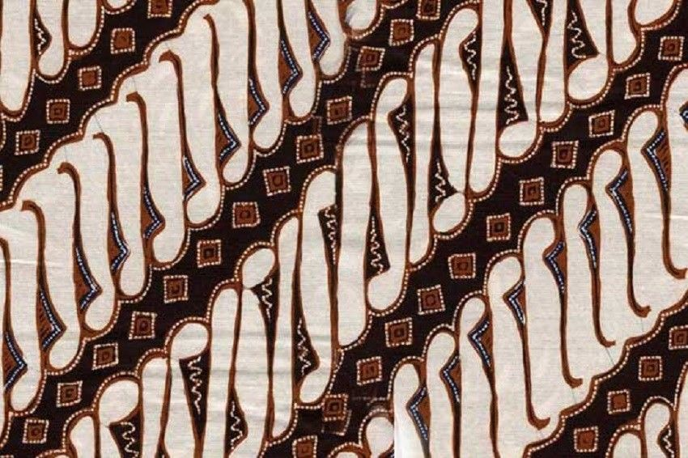
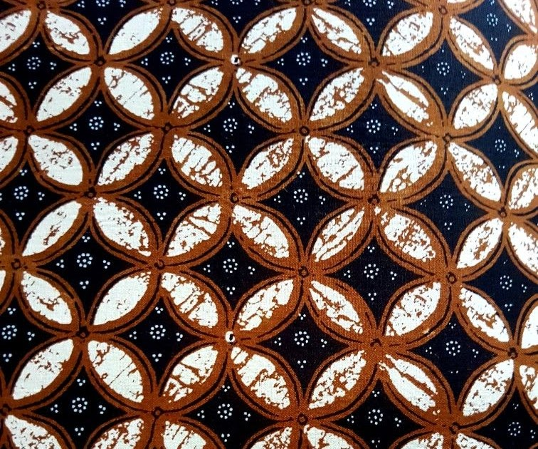
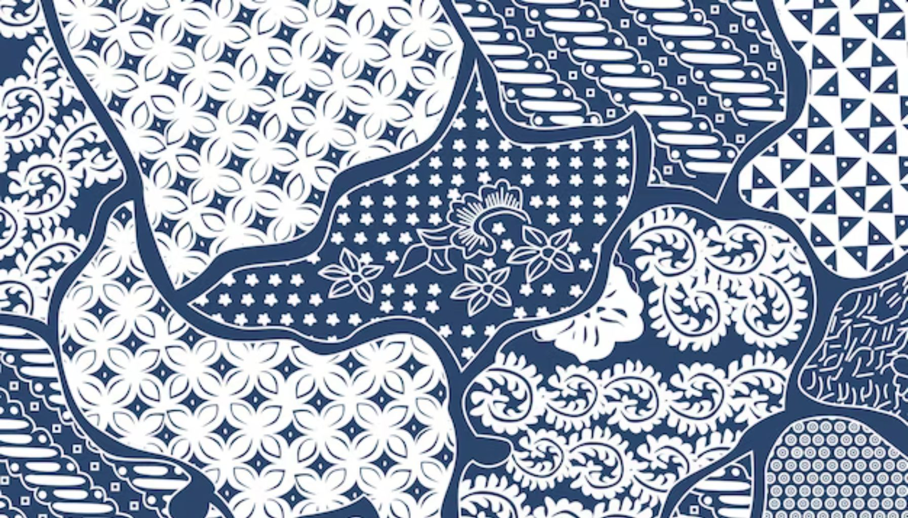
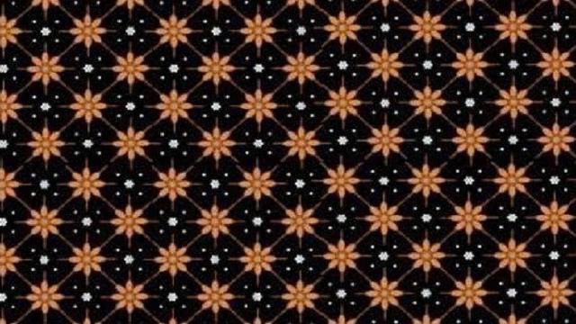
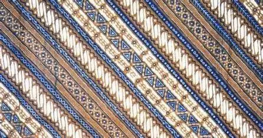

Motif Batik Indonesia
Setiap motif batik memiliki cerita, makna, dan filosofi yang dalam. Klik pada salah satu motif untuk melihat detail lebih lengkap.

Parang
Motif diagonal yang ikonik dan penuh makna keberanian.

Kawung
Motif klasik berbentuk lingkaran, penuh makna keseimbangan.
Mega Mendung
Motif awan dari Cirebon, simbol keteduhan hati.

Sekar Jagad
Motif peta dunia yang melambangkan keberagaman.

Truntum
Motif penuh bintang, simbol cinta yang tumbuh kembali.

Lereng
Motif diagonal berulang, simbol keteraturan hidup.